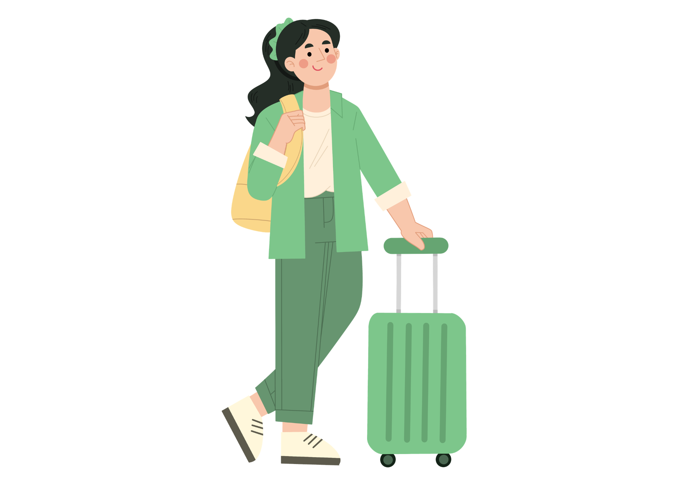

ʚଓ Mundpflege & Zahnpflege
Igiena gurii și a dinților — spălat, proteză, probleme, pacienți imobilizați
Claudia Toth · Annettes Deutschkurs · A2.1 · Pflege Lecția 26 din 45
👋 Andreea o ajută pe Frau Müller la spălatul dinților dimineața și la îngrijirea protezei seara

Andreea 🇷🇴
Pflegerin · ajută
⚪
👵
Frau Müller
Pacientă · proteză

Annette
Profesoara · Berlin

Mihai
Bucătar · Potsdam

Florian
Doctor · Berlin

Carolina
Fotografă · Berlin
⚠️ Notă de siguranță — citește înainte
Această lecție te pregătește LINGVISTIC pentru îngrijirea zilnică a gurii (spălatul dinților, proteza, observarea problemelor). NU înlocuiește formarea practică. 🦷 Igiena simplă e treaba ta; problemele sunt ale specialistului: Soor (strat alb) → Hausarzt · proteză care nu se potrivește / Druckstellen / dureri de dinți → Zahnarzt (dentist). 🚨 La proteză: NICIODATĂ apă fierbinte (se deformează). La pacienții imobilizați: foarte puțină apă (pericol de aspirație). Tu observi, documentezi, anunți.
⌨️ Tastatură fără caractere germane? Scrie ss pentru ß · ae pentru ä · oe pentru ö · ue pentru ü. La propoziții, punctul final e opțional. 🙂